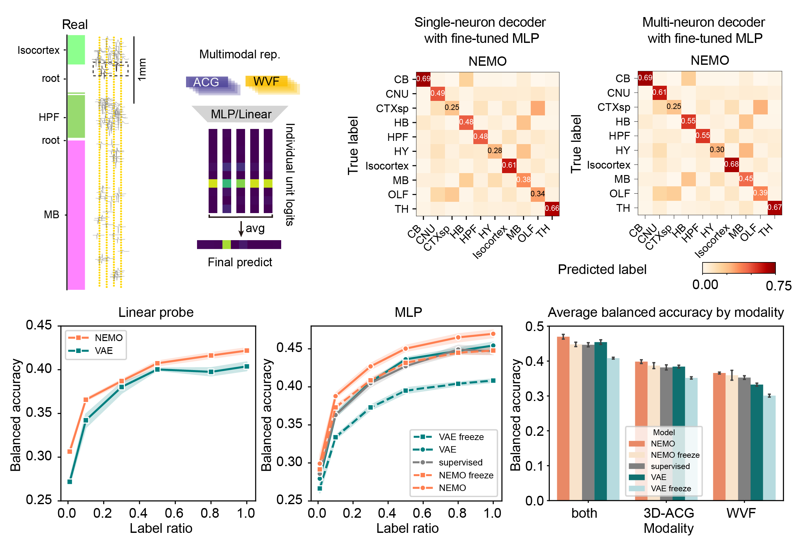
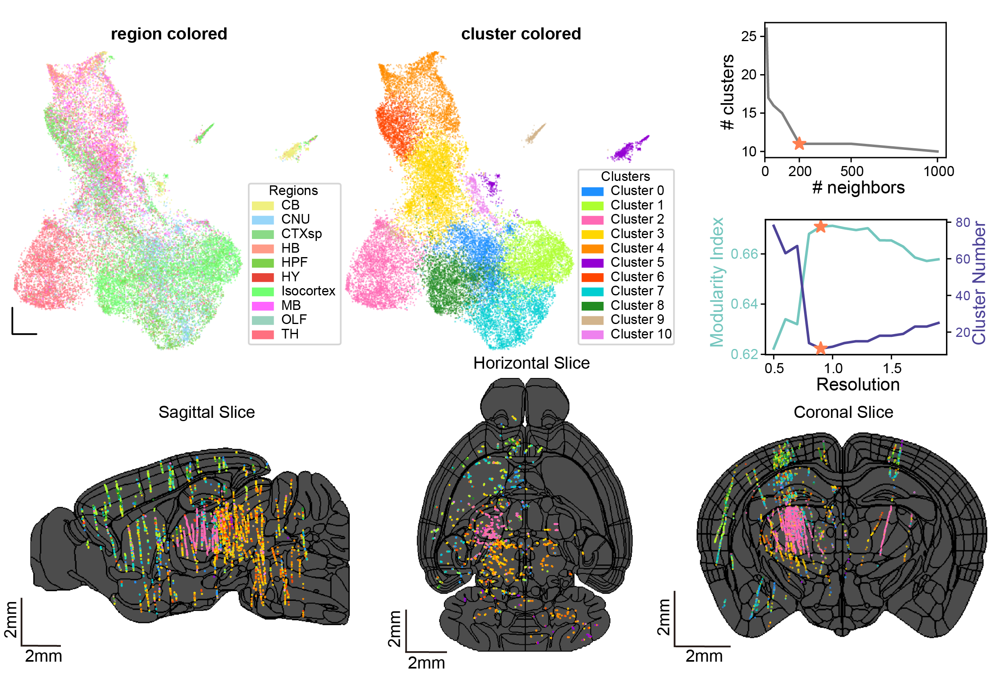

In vivo cell-type and brain region classification via multimodal contrastive learning
- 1Columbia University
- 2Northwestern University
- 3Boston University
- 4University of College London
- 5Allen Institute
- 6Champalimaud Foundation
- 7Georgia Institute of Technology
- 8University of Washington


Overview

Abstract
Current electrophysiological approaches can track the activity of many neurons, yet it is usually unknown which cell-types or brain areas are being recorded without further molecular or histological analysis. Developing accurate and scalable algorithms for identifying the cell-type and brain region of recorded neurons is thus crucial for improving our understanding of neural computation. In this work, we develop a multimodal contrastive learning approach for neural data that can be fine-tuned for different downstream tasks, including inference of cell-type and brain location. We utilize multimodal contrastive learning to jointly embed the activity autocorrelations and extracellular waveforms of individual neurons. We demonstrate that our embedding approach, Neuronal Embeddings via MultimOdal Contrastive Learning (NEMO), paired with supervised fine-tuning, achieves state-of-the-art cell-type classification for two opto-tagged datasets and brain region classification for the public International Brain Laboratory Brain-wide Map dataset. Our method represents a promising step towards accurate cell-type and brain region classification from electrophysiological recordings. Code is availabe at https://github.com/Haansololfp/NEMO.
Highlights
- A multimodal contrastive learning method for electrophysiological data, Neuronal Embeddings via MultimOdal Contrastive Learning (NEMO).
- Utilizes unlabeled data for pre-training and can be fine-tuned for different downstream tasks including cell-type and brain region classification.
- NEMO outperforms current unsupervised (PhysMAP and VAEs) and supervised methods, with particularly strong performance in label-limited regimes.
Model schematic

NEMO utilizes a CLIP-based objective where an EAP encoder and an ACG image encoder are trained to embed randomly augmented EAPs and ACG image from the same neuron close together while keeping different neurons separate. The learned representations can be utilized for downstream tasks such as cell-type and brain-region classification.
Cerebellum cell-type classification (Beau et al. 2025)

Visual cortex cell-type classification (Ye et al. 2024)

Comparing NEMO to baseline models on two different optotagged datasets: an NP Ultra visual cortex (Ye et al. 2024) and a Neuropixels 1 cerebellum dataset (Beau et al. 2025). We show the UMAP visualization of NEMO representations for unseen opto-tagged units, colored by different cell-types. We also show the Balanced accuracy Confusion matrices normalized by ground truth label and averaged across 5 random seeds. NEMO outperforms the other embedding methods by a significant margin across all cell-types and evaluation methods.
Brain region classification for the Brain-Wide Map (BWM; International Brain Laboratory et al. 2024)
Results for NEMO on the IBL brain region classification task. We show a schematic for multi-neuron classifier. At each depth, the neurons within 60 microns were used to classify the anatomical region. Only the nearest 5 neurons were selected if there were more than 5 neurons within that range. We average the logits of the single-neuron classifier (trained on NEMO embeddings) for all 5 neurons. The final prediction is based on the average of the individual logits. We show confusion matrices for the single-neuron region classifier and multi-neuron region classifier for fine-tuned NEMO, averaged across 5 runs. We show the single neuron balanced accuracy with linear classifier and the MLP head for each model trained/fine-tuned with different label ratios. We also show the single-neuron MLP-classification balanced accuracy for each modality separately and for the combined representation.
Clustering and visualization the NEMO representations for the BWM
IBL neuron clustering using NEMO. We show the UMAP visualization of the representations that NEMO extracts from the training data colored by anatomical brain region. We also show the same UMAP instead colored by cluster labels using a graph-based approach (Louvain clustering). We tuned the neighborhood size in UMAP and the resolution for the clustering. These parameters were selected by maximizing the modularity index which minimized the number of clusters. We show 2D brain slices across three brain views with the location of individual neurons colored using the cluster IDs. The black lines show the region boundaries of the Allen mouse atlas (Wang et al. 2020). The cluster distribution found using NEMO is closely correlated with the anatomical regions and is consistent across insertions from different labs.
BibTeX
If you find our data or project useful in your research, please cite:
@inproceedings{
yu2025in,
title={In vivo cell-type and brain region classification via multimodal contrastive learning},
author={Han Yu and Hanrui Lyu and YiXun Xu and Charlie Windolf and Eric Kenji Lee and Fan Yang and Andrew M Shelton and Olivier Winter and International Brain Laboratory and Eva L Dyer and Chandramouli Chandrasekaran and Nicholas A. Steinmetz and Liam Paninski and Cole Lincoln Hurwitz},
booktitle={The Thirteenth International Conference on Learning Representations},
year={2025},
url={https://openreview.net/forum?id=10JOlFIPjt}
}